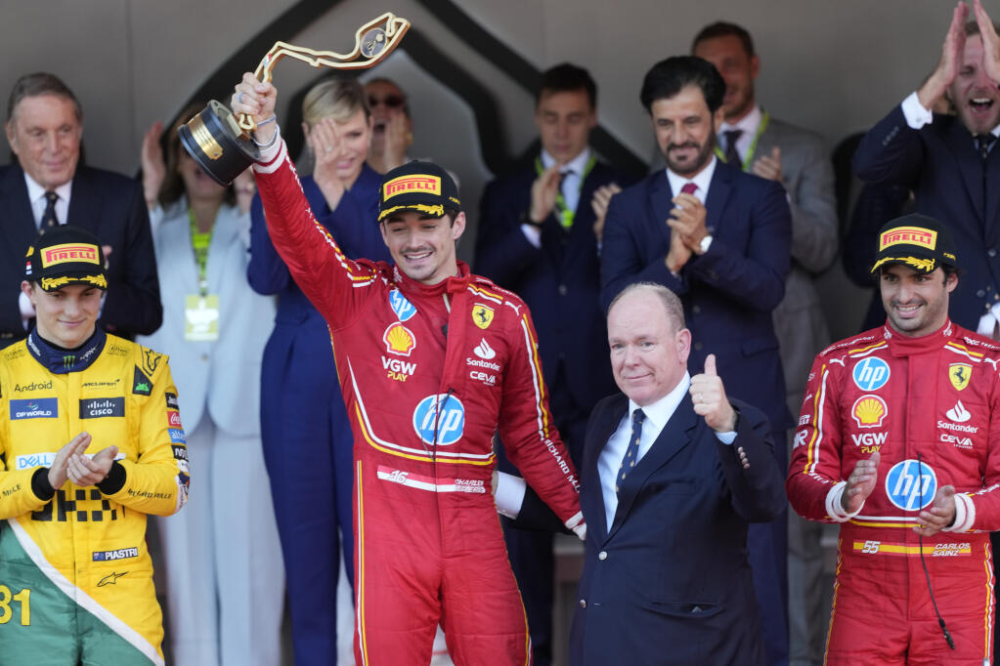
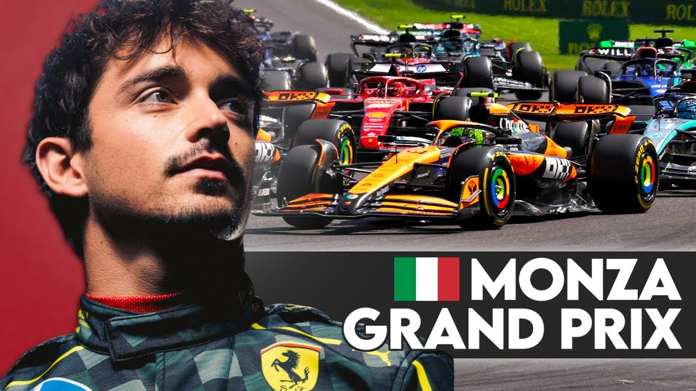

The Temple of Speed
August 30, 2024 by Vishane Stubbs
This year, I had the exhilarating experience of watching the Italian F1 Grand Prix, and it was nothing short of incredible.
Monza, with its rich racing heritage, lived up to its reputation as "The Temple of Speed." As a fan of motorsport, seeing those cars fly around the iconic corners like Parabolica and Lesmo felt like watching history in the making.
The energy from the crowd was contagious, and the roar of the engines amplified the tension and excitement with every lap.

Witnessing the top-tier drivers battle for the podium at such a prestigious venue was a thrill, especially when the race reached its climactic moments.
The strategy, the speed, and the sheer determination of the teams made it a gripping spectacle from start to finish.
It’s moments like these that remind me why F1 is such a fascinating sport, blending precision, technology, and human skill in the pursuit of glory.
Watching the Italian Grand Prix this year was a highlight, deepening my love for the sport.
Grand Prix de Monaco
October 3rd, 2024 by Vishane Stubbs
The 2024 Monaco Grand Prix was a masterclass in precision driving, and being able to watch it unfold around the streets of Monte Carlo was absolutely mesmerizing. Max Verstappen continued his dominance this season, claiming a crucial win at one of the most prestigious tracks on the F1 calendar.
The narrow, winding streets of Monaco always test the drivers to their limits, and Verstappen’s flawless performance from pole position to the checkered flag highlighted his incredible control.

Behind him, though, the fight for the podium was intense, with Charles Leclerc desperately trying to win his home race.
The Monegasque driver kept the pressure on Verstappen throughout, but ultimately had to settle for second in front of his home crowd, marking his best finish here to date.Monaco, with its notoriously difficult overtaking, became a battle of strategy as much as speed.
One of the key moments was when Mercedes’ Lewis Hamilton made a bold strategic call during the pit stops, jumping ahead of Fernando Alonso’s Aston Martin for third place.